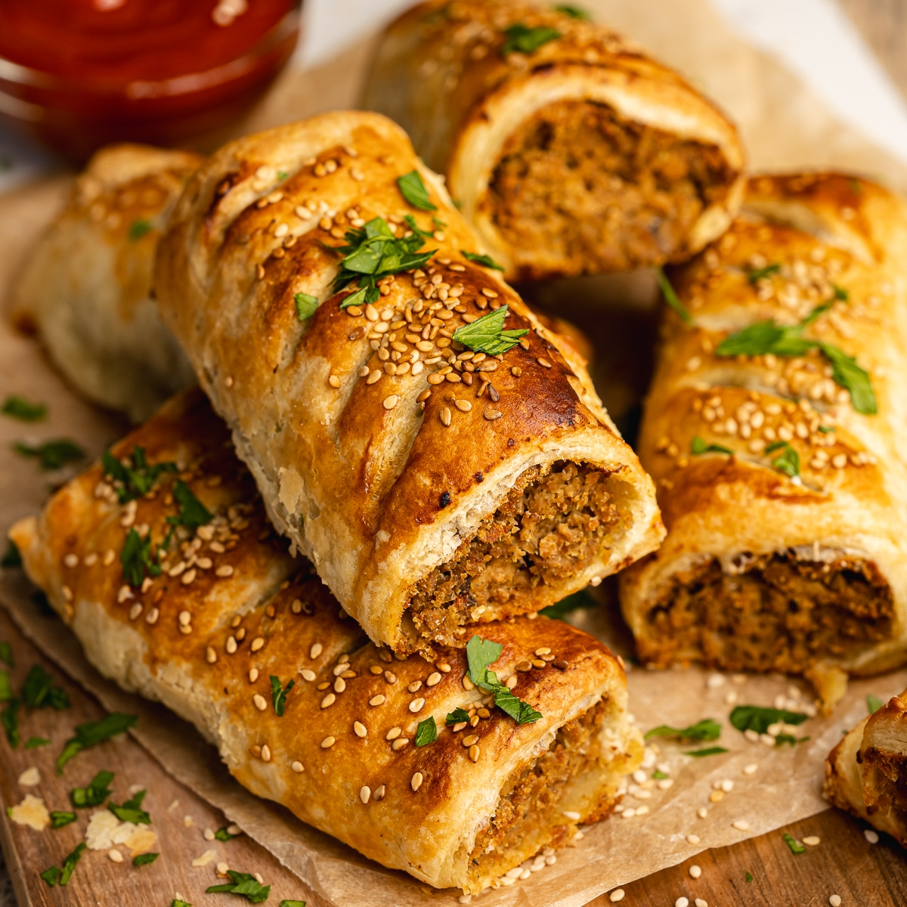
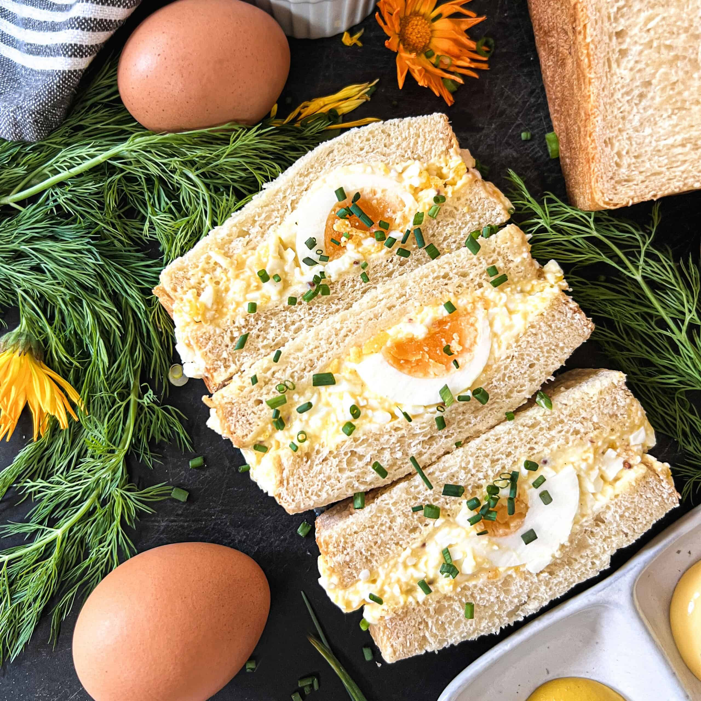
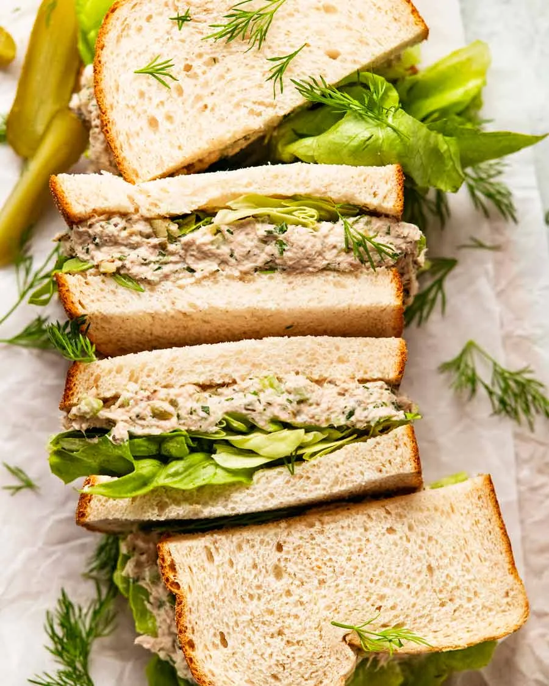
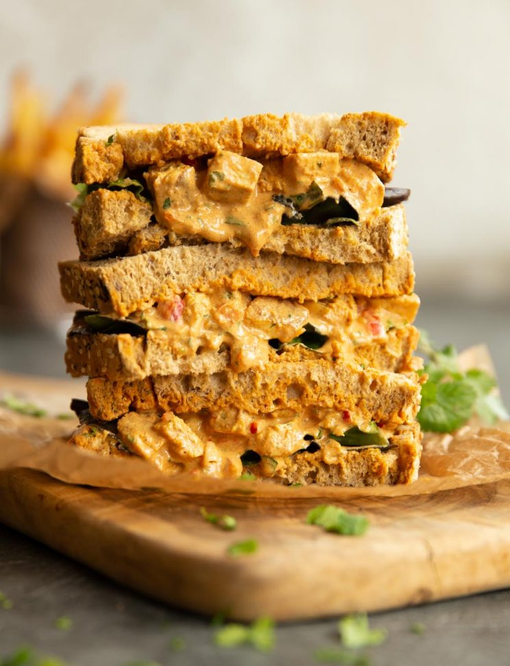
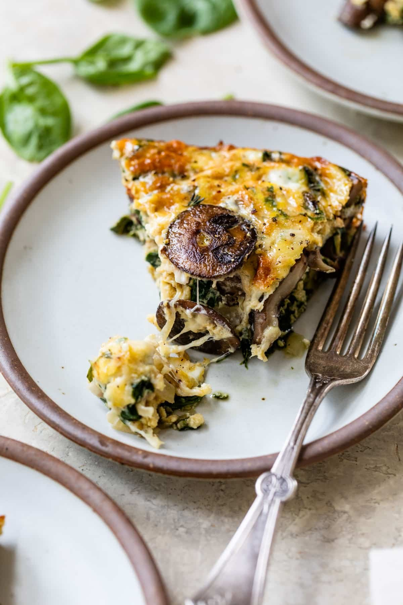
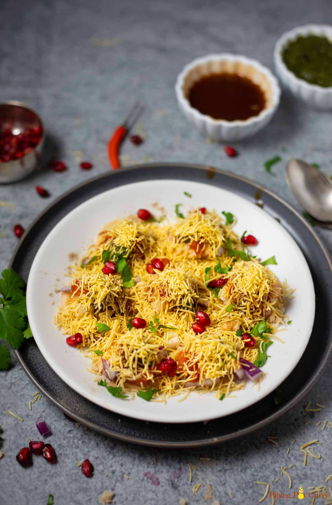

Savoury Treats

Garden Sausage Roll
A mix of lentils, mushrooms, and carrots with herbs, all tucked inside light, flaky pastry., baked until golden and irresistible.

Cheesy Hammy
Flaky, golden croissant filled with melted cheese and slices of tender ham.

Sunny Slice Up
Silky egg mayo with a hint of mustard and fresh herbs, served on soft, lightly buttered bread.

Tuna It Up
Creamy tuna salad with a hint of herbs, layered between fresh, soft bread.

Spice Slice
Grilled chicken tikka infused with aromatic spices, paired with fresh salad on soft bread.

Shrooms & Leaves
Light, savory custard with spinach and mushrooms, baked in crisp pastry.

Puri Party
Golden puris topped with vibrant potatoes, onions, tomatoes, tamarind chutney, and a generous sprinkle of crunchy sev and pomegranate.